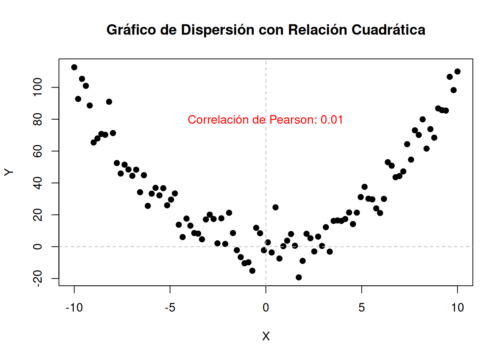
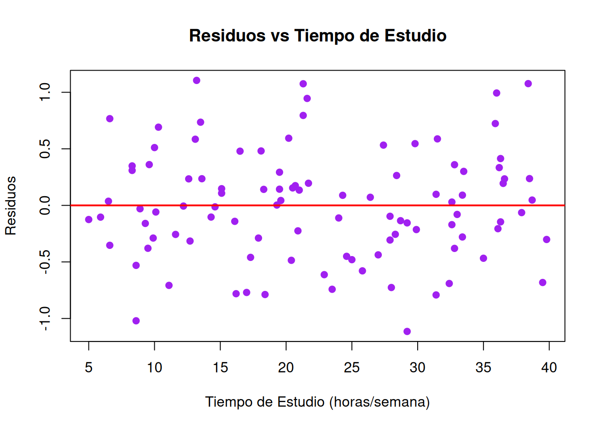
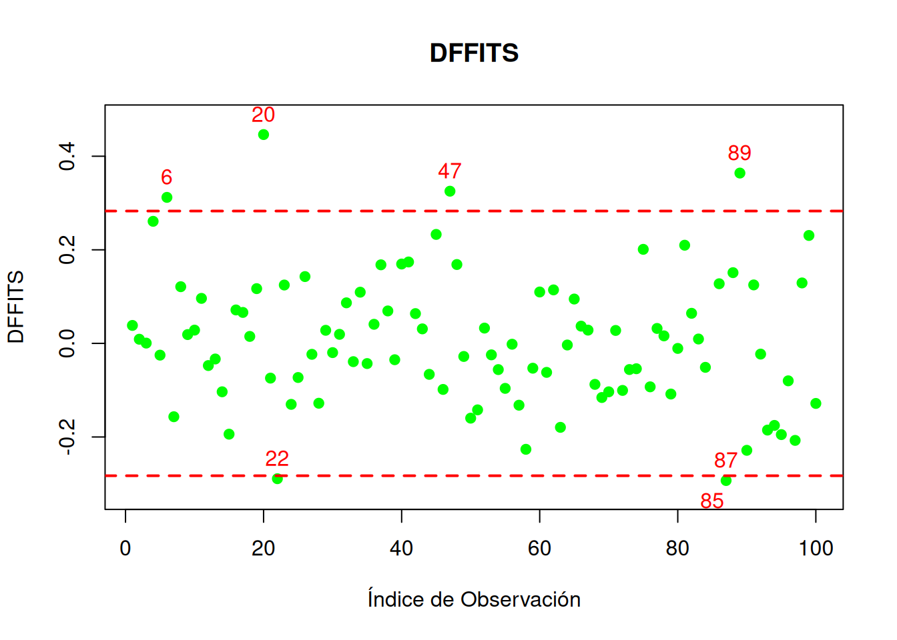

La regresión lineal constituye uno de los pilares fundamentales de la modelización estadística y es ampliamente utilizada en múltiples disciplinas para analizar relaciones entre variables. Este modelo permite explorar cómo una o varias variables explicativas (independientes) influyen sobre una variable respuesta (dependiente), proporcionando no solo descripciones útiles sino también herramientas para la predicción y la inferencia (Draper 1998).
El modelo de regresión lineal simple se centra en analizar la relación entre una única variable explicativa y una respuesta, mientras que el modelo de regresión lineal múltiple extiende este concepto al considerar múltiples variables explicativas, permitiendo capturar relaciones más complejas y realistas. Ambos modelos comparten principios fundamentales, como el ajuste de una recta mediante el criterio de mínimos cuadrados y la interpretación de sus parámetros, pero difieren en su alcance y en los retos que presentan(weisberg2005applied?).
En este tema, abordaremos los fundamentos de la regresión lineal simple, incluyendo sus suposiciones clave, el procedimiento de estimación de parámetros y el uso de herramientas de diagnóstico. A través de ejemplos prácticos, como los estudios clásicos de Galton sobre la herencia de estaturas o el análisis de datos de inversión en publicidad, se ilustrará el poder descriptivo y predictivo de este modelo.
Este tema también prepara las bases para comprender el modelo de regresión lineal múltiple, presentado como una generalización del simple, y para abordar las complejidades adicionales que surgen, como la colinealidad entre variables explicativas y la selección de modelos óptimos.
La comprensión y aplicación correcta de estos modelos es esencial no solo para su utilidad en contextos prácticos, sino también porque representan el punto de partida para técnicas más avanzadas en la ciencia de datos y el aprendizaje automático.
Objetivos
Los siguiente objetivos buscan sentar las bases teóricas y prácticas necesarias para entender y aplicar modelos de regresión, preparando al estudiante para explorar modelos más complejos en los temas posteriores.
Introducción a la modelización estadística:
Comprender el proceso de modelización estadística, desde la definición de objetivos y variables hasta el ajuste y evaluación del modelo.
Relación lineal y correlación:
Introducir conceptos como la correlación y la relación lineal entre variables.
Analizar cómo identificar y medir la fuerza de la relación entre dos variables.
Comprensión del modelo de regresión lineal simple:
Describir la estructura del modelo de regresión lineal simple y entender su formulación matemática.
Interpretar los parámetros del modelo (intercepto y pendiente) y su significado en un contexto práctico.
Procedimiento de inferencia estadística:
Estimar los coeficientes del modelo mediante el método de mínimos cuadrados.
Realizar inferencias sobre los parámetros, incluyendo contrastes de hipótesis y predicciones.
Diagnóstico del modelo:
Introducir herramientas para diagnosticar la adecuación del modelo ajustado.
Evaluar la validez de los supuestos del modelo, como la linealidad, homocedasticidad e independencia de errores.
Aplicación práctica:
Implementar el modelo en contextos reales, como el análisis de la influencia de inversiones en ganancias o la herencia de características biológicas (ejemplo de Galton).
Visualizar y analizar gráficamente las relaciones para facilitar la interpretación de los resultados.
1.1 Modelización estadística
La modelización estadística es un proceso estructurado que permite analizar y describir relaciones entre variables mediante modelos matemáticos. Este enfoque es fundamental en la estadística aplicada y proporciona herramientas para interpretar datos, realizar predicciones y tomar decisiones fundamentadas. A continuación, se describen los pasos clave de este proceso. Este enfoque sistemático asegura que el modelo ajustado sea robusto, interpretable y útil para realizar predicciones confiables. La revisión continua y el ajuste basado en evidencia permiten capturar la complejidad de los datos de manera efectiva.
1.1.1 Contextualización del problema
El primer paso en la modelización estadística es definir el problema que se busca analizar. Esto incluye identificar el contexto, establecer objetivos claros y determinar las variables involucradas.
Ejemplo
Problema: Investigar si existe una relación positiva entre el tiempo dedicado al estudio semanal y el promedio de calificaciones de los estudiantes universitarios.
Variables:
Variable explicativa (independiente): Tiempo de estudio semanal (en horas).
Variable respuesta (dependiente): Promedio de calificaciones al final del semestre (en una escala de 0 a 10).
Objetivo: Determinar si los estudiantes que dedican más horas al estudio semanalmente obtienen mejores calificaciones en promedio.
Emplearemos datos simulados para este ejemplo:
# Establecer la semilla para reproducibilidadset.seed(123)# Número de estudiantesn <-100# Generar tiempo de estudio (en horas) como una variable independientetiempo_estudio <-round(runif(n, min =5, max =40), 1)# Relación lineal entre tiempo de estudio y calificaciones (con ruido)beta_0 <-5# Interceptobeta_1 <-0.1# Pendiente (efecto del tiempo de estudio)sigma <-0.5# Varianza del ruido# Esta será la relación que deseamos "descubrir".calificaciones <-round(beta_0 + beta_1 * tiempo_estudio +rnorm(n, mean =0, sd = sigma), 2)# Crear un data frame con los datos generadosdatos <-data.frame(Tiempo_Estudio = tiempo_estudio, Calificaciones = calificaciones)# Visualizar los primeros registroshead(datos)
1.1.2 Inspección gráfica e identificación de tendencias
Antes de ajustar un modelo, es esencial realizar una inspección visual de los datos. Los gráficos de dispersión son una herramienta útil para observar tendencias, relaciones o patrones entre las variables.
Ejemplo
En el ejemplo, representamos el tiempo de estudio frente a las calificaciones. De este modo podemos analizar si los puntos siguen un patrón lineal o si muestran comportamientos más complejos.
# Graficar los datos de estudio generados anteriormenteplot(datos$Tiempo_Estudio, datos$Calificaciones,main ="Relación entre Tiempo de Estudio y Calificaciones",xlab ="Tiempo de Estudio (horas/semana)",ylab ="Calificaciones (promedio)",pch =19, col ="blue")
1.1.3 Propuesta y ajuste del modelo
Con base en las observaciones previas, se propone un modelo estadístico que relacione las variables. En el caso de relaciones lineales, la ecuación típica es:
donde \(\beta_0\) es la constante (o intercepto), \(\beta_1\) es la pendiente, y \(\varepsilon\) es el término de error aleatorio.
Fíjate que la expresión anterior concuerda con el siguiente principio fundamental del análisis de datos:
\[DATOS = MODELO + ERROR\]
Los datos representan la realidad (procesos de negocios, clientes, productos, actividades, fenómenos físicos, etc.) que se quiere comprender, predecir o mejorar.
El modelo es una representación simplificada de la realidad que proponemos para describirla e interpretarla más fácilmente.
El error refleja la diferencia entre nuestra representación simplificada de la realidad (el modelo) y los datos que relamente describen esa realidad de forma precisa.
Ejemplo
Propuesta del modelo: \[
\text{Calificaciones} = \beta_0 + \beta_1 (\text{Tiempo de Estudio}).
\]
Ajuste: Calcular los valores de $ _0 $ y $ _1 $ mediante el método de mínimos cuadrados. Este método busca minimizar la suma de los errores cuadrados entre los valores observados y los predichos por el modelo.
# Ajustar un modelo de regresión linealmodelo <-lm(Calificaciones ~ Tiempo_Estudio, data = datos)summary(modelo)
Call:
lm(formula = Calificaciones ~ Tiempo_Estudio, data = datos)
Residuals:
Min 1Q Median 3Q Max
-1.11465 -0.30262 -0.00942 0.29509 1.10533
Coefficients:
Estimate Std. Error t value Pr(>|t|)
(Intercept) 5.00118 0.11977 41.76 <2e-16 ***
Tiempo_Estudio 0.09875 0.00488 20.23 <2e-16 ***
---
Signif. codes: 0 '***' 0.001 '**' 0.01 '*' 0.05 '.' 0.1 ' ' 1
Residual standard error: 0.4842 on 98 degrees of freedom
Multiple R-squared: 0.8069, Adjusted R-squared: 0.8049
F-statistic: 409.5 on 1 and 98 DF, p-value: < 2.2e-16
# Graficar los datos de estudio y su recta de regresión linealplot(datos$Tiempo_Estudio, datos$Calificaciones,main ="Relación entre Tiempo de Estudio y Calificaciones",xlab ="Tiempo de Estudio (horas/semana)",ylab ="Calificaciones (promedio)",pch =19, col ="blue")abline(lm(Calificaciones ~ Tiempo_Estudio, data = datos), col ="red", lwd =2)
A la vista de los estimadores de los parámetros del modelo, tenemos la siguiente interpretación:
Se produce un incremento de la calificiación de \(0.1\) (aproximadamente) por cada incremento de \(1\) hora en el tiempo de estudio. O bien, por cada \(10\) horas de estudio, se incrementa la nota en \(1\) punto.
En ocasiones es complicado interpretar el valor de \(\beta_0\). En este caso, corresponde a la calificación de los estudiantes que no dedican ningún tiempo de estudio. En este caso sería \(5\) (aproximadamente).
1.1.4 Revisión y diagnóstico del modelo
Una vez ajustado el modelo, es crucial evaluar su calidad. Esto implica analizar si los supuestos del modelo se cumplen, como la linealidad, la homocedasticidad y la independencia de los errores.
Deberemos realizar las siguientes tareas:
Comparar los valores predichos por el modelo con los datos observados para verificar su ajuste.
Examinar los residuos (errores) para identificar posibles problemas, como tendencias no capturadas o varianzas no constantes.
1.1.5 Reajuste del modelo
Si el diagnóstico revela deficiencias en el modelo ajustado, se plantean modificaciones. Estas pueden incluir:
Transformaciones de variables para mejorar la linealidad.
Introducción de términos adicionales, como variables cuadráticas o interacciones.
Cambios a modelos no lineales si el comportamiento de los datos lo requiere.
Estudios de Galton sobre estatura
Los estudios de Sir Francis Galton sobre la estatura son un ejemplo clásico en estadística y forman parte de la historia de la regresión lineal. Galton, un polímata británico del siglo XIX, investigó la herencia biológica y publicó en 1889 su libro Natural Inheritance, donde analizó datos sobre la relación entre las estaturas de padres e hijos. Estos estudios no solo sentaron las bases para la regresión lineal, sino que también ayudaron a formalizar conceptos clave en estadística, haciendo de Galton una figura central en su desarrollo.
Contexto y propósito
Galton estaba interesado en cómo las características físicas, como la estatura, se transmiten de padres a hijos. Su objetivo era cuantificar esta relación y establecer patrones de herencia. En particular, buscó responder si los hijos de padres altos tienden a ser más altos y si los de padres bajos tienden a ser más bajos.
Datos recopilados
Galton recopiló datos sobre las estaturas de 928 hijos y sus respectivos padres.
Las medidas fueron expresadas en pulgadas (1 pulgada = 2.54 cm).
En sus análisis, utilizó el promedio de las estaturas de ambos padres, conocido como estatura media parental, para compararlo con la estatura de los hijos.
Principales hallazgos
Relación lineal entre padres e hijos:
Galton observó que existe una relación positiva entre la estatura de los padres y la de los hijos. Los padres altos tienden a tener hijos altos, y los padres bajos tienden a tener hijos bajos. Esta relación puede modelarse con una línea recta, lo que inspiró la formulación de la regresión lineal.
Regresión a la media:
Aunque los hijos de padres altos son, en promedio, más altos que el promedio general de la población, también tienden a ser menos altos que sus padres.
De manera similar, los hijos de padres bajos son más bajos que el promedio general, pero suelen ser menos bajos que sus padres.
Este fenómeno, que Galton llamó “regresión a la media”, ocurre porque las características extremas tienden a suavizarse en la siguiente generación debido a la influencia de múltiples factores genéticos y ambientales.
Ecuación de la recta de regresión:
Galton ajustó una recta para describir la relación entre la estatura media parental (\(X\)) y la estatura de los hijos (\(Y\)): \[
Y = \beta_0 + \beta_1 X
\] Donde:
\(\beta_0\): Intercepto, representa la estatura promedio de los hijos cuando la estatura parental es promedio.
\(\beta_1\): Pendiente, indica cómo cambia la estatura de los hijos por cada unidad de cambio en la estatura media parental.
Importancia en la Estadística
Regresión lineal:
Este estudio introdujo el concepto de recta de regresión, que describe cómo varía la media de una variable dependiente en función de una variable independiente.
Correlación:
Galton también estudió el grado de relación entre variables, precursor del concepto de coeficiente de correlación desarrollado posteriormente por Karl Pearson, un discípulo suyo.
Regresión a la media:
El término y la idea detrás de “regresión a la media” surgieron de estos estudios y son hoy fundamentales en estadística y genética.
Ejemplo Gráfico
Galton representó sus datos en gráficos de dispersión, mostrando cómo los puntos (pares de estatura media parental y estatura de los hijos) se agrupan alrededor de la recta de regresión, ilustrando la tendencia general de la relación.
# Instalar y cargar los paquetes necesarioslibrary(ggplot2)library(HistData)# Cargar los datos de Galtondata("GaltonFamilies")galton_data <- GaltonFamilies# Crear el modelo de regresión linealmodelo <-lm(childHeight ~ midparentHeight, data = galton_data)# Crear el gráfico con ggplot2grafico <-ggplot(galton_data, aes(x = midparentHeight, y = childHeight)) +geom_point() +# Añadir puntos de datosgeom_smooth(method ="lm", col ="red") +# Añadir la recta de regresiónlabs(title ="Altura de Padres e Hijos (Datos de Galton)",x ="Altura de los Padres",y ="Altura de los Hijos") +annotate("text", x =67, y =75, label =paste("y =", round(coef(modelo)[1], 2), "+", round(coef(modelo)[2], 2), "x"), color ="red")# Mostrar el gráficoprint(grafico)
`geom_smooth()` using formula = 'y ~ x'
1.2 Correlación
La correlación es una medida estadística que describe la relación entre dos variables. Permite evaluar si existe una asociación entre ellas y en qué grado los cambios en una variable están relacionados con los cambios en la otra. En el contexto de modelos de regresión, la correlación es un paso fundamental para explorar la fuerza y la dirección de la relación entre las variables explicativas y la variable respuesta.
Concepto de correlación
La correlación responde a preguntas como:
¿A valores altos de una variable le corresponden valores altos de la otra? (correlación positiva).
¿A valores altos de una variable le corresponden valores bajos de la otra? (correlación negativa).
¿No existe un patrón evidente de asociación? (ausencia de correlación).
1.2.1 Covarianza
La covarianza es una medida que cuantifica cómo varían conjuntamente dos variables. Su fórmula es: \[
\text{Cov}(X, Y) = \frac{\sum_{i=1}^{n}(X_i - \bar{X})(Y_i - \bar{Y})}{n}
\]
Si la covarianza es positiva, indica una tendencia a que ambas variables aumenten juntas (relación positiva).
Si es negativa, una variable tiende a aumentar mientras la otra disminuye (relación negativa).
Una covarianza cercana a cero sugiere que no hay una relación lineal significativa.
Sin embargo, la covarianza tiene una limitación: su valor depende de las unidades de medida de las variables, lo que dificulta su interpretación directa.
Ejemplo
# Cargar los datos de Galtondata("GaltonFamilies")galton_data <- GaltonFamilies# Seleccionar las variables de interésmidparent_height <- galton_data$midparentHeightchild_height <- galton_data$childHeight# Calcular la covarianzacovarianza <-round(cov(midparent_height, child_height),3)# Mostrar el resultadoprint(paste("La covarianza entre la altura de los padres y la altura de los hijos es:", covarianza))
[1] "La covarianza entre la altura de los padres y la altura de los hijos es: 2.07"
1.2.2 Coeficiente de correlación lineal
Para superar la limitación anterior, se utiliza el coeficiente de correlación lineal de Pearson (\(r\)), que estandariza la covarianza dividiéndola por las desviaciones típicas de las variables:
El coeficiente de correlación es adimensional y toma valores entre \(-1\) y \(1\), facilitando su interpretación sin importar las unidades de las variables.
Ejemplo
# Cargar los datos de Galtondata("GaltonFamilies")galton_data <- GaltonFamilies# Seleccionar las variables de interésmidparent_height <- galton_data$midparentHeightchild_height <- galton_data$childHeight# Calcular la covarianzacorrelacion_pearson <-round(cor(midparent_height, child_height),2)# Mostrar el resultadoprint(paste("El coeficiente de correlación de Pearson entre la altura de los padres y la altura de los hijos es:", correlacion_pearson))
[1] "El coeficiente de correlación de Pearson entre la altura de los padres y la altura de los hijos es: 0.32"
Interpretación del Coeficiente de Correlación
Magnitud:
Valores cercanos a \(|1|\) indican una relación lineal fuerte.
Valores cercanos a \(0\) sugieren una relación lineal débil o inexistente.
Signo:
Positivo: Ambas variables tienden a moverse en la misma dirección.
Negativo: Las variables tienden a moverse en direcciones opuestas.
Relación lineal y otras relaciones
Es importante destacar que una correlación de \(r = 0\) no implica necesariamente que no haya relación entre las variables. Puede haber una relación no lineal que el coeficiente de correlación lineal no detecta.
Ejemplo
Por ejemplo, en un gráfico de dispersión en forma de parábola, el coeficiente de correlación lineal podría ser cercano a 0, a pesar de que existe una relación cuadrática clara entre las variables.
# Generar datos de ejemploset.seed(0)x <-seq(-10, 10, length.out =100)y <- x^2+rnorm(100, mean =0, sd =10)# Calcular el coeficiente de correlación de Pearsoncorrelacion_pearson <-cor(x, y)# Crear el gráfico de dispersiónplot(x, y, main ="Gráfico de Dispersión con Relación Cuadrática",xlab ="X", ylab ="Y", pch =19)abline(h =0, v =0, col ="gray", lty =2)# Mostrar el coeficiente de correlación en el gráficotext(0, 80, paste("Correlación de Pearson:", round(correlacion_pearson, 2)), col ="red")

1.2.3 Aplicación práctica
La correlación es una herramienta inicial esencial en la exploración de datos:
Identifica variables explicativas potenciales para modelos de regresión.
Ayuda a entender la estructura de los datos y a verificar si una relación lineal es razonable.
Ejemplo
En un análisis del tiempo de estudio semanal y las calificaciones, se puede calcular el coeficiente de correlación \(r\) para determinar si los estudiantes que estudian más tienden a obtener mejores resultados.
# Generar datos de ejemplo# Calcular el coeficiente de correlación de Pearsoncoef_correlacion <-round(cor(datos$Tiempo_Estudio, datos$Calificaciones),3)# Mostrar el coeficiente de correlacióncat("El coeficiente de correlación entre el tiempo de estudio y las calificaciones es:", coef_correlacion, "\n")
El coeficiente de correlación entre el tiempo de estudio y las calificaciones es: 0.898
1.3 Regresión lineal simple
La regresión lineal simple es una de las herramientas más fundamentales y ampliamente utilizadas en el análisis estadístico. Su objetivo principal es modelar la relación entre dos variables: una variable explicativa (independiente) y una variable respuesta (dependiente). Este modelo permite no solo describir cómo se relacionan estas dos variables, sino también realizar predicciones basadas en dicha relación.
El concepto básico de la regresión lineal simple es ajustar una recta que minimice las discrepancias entre los valores observados y los predichos por el modelo. La ecuación general de este modelo es: \[
Y = \beta_0 + \beta_1 X + \varepsilon,
\] donde:
\(Y\) es la variable dependiente o respuesta.
\(X\) es la variable independiente o explicativa.
La ecuación recibe el nombre de recta de regresión.
Los coeficiente \(\beta_0\) y \(\beta_1\) reciben el nombre de coeficientes del modelo de regresión.
\(\beta_0\) es el intercepto, que representa el valor de \(Y\) cuando \(X = 0\).
\(\beta_1\) es la pendiente, que indica el cambio esperado en \(Y\) por cada unidad de cambio en \(X\).
\(\varepsilon\) es un término de error que captura la variabilidad no explicada por el modelo.
Para cada valor fijo de \(X\), \(Y\) es una variable aleatoria, es decir, \(Y\) sigue una distribución de probabilidad para cada valor fijo de \(X\), con media o valor esperado: \[
E[Y|X]=\beta_0+\beta_1X,
\] y con varianza: \[
Var(Y|X)=Var(\beta_0+\beta_1X+\varepsilon)=Var(\varepsilon)=\sigma^2.
\]
Propiedades Clave
Para que las inferencias del modelo sean válidas, se requieren ciertos supuestos sobre los datos y el término de error \(\varepsilon\):
Linealidad: La relación entre \(X\) y \(Y\) es lineal. Es decir, la esperanza de \(Y\) es una función lineal de \(X\).
Independencia: Los términos de error \(\varepsilon\) son independientes entre sí. Los errores para observaciones distintas son incorrelados, es decir \(\varepsilon_i\) y \(\varepsilon_j\) son no correlados y, por tanto, también lo son \(Y_i\) e \(Y_j\).
Homocedasticidad: La varianza de los términos de error \(\varepsilon\) es constante para todos los valores de \(X\). Es decir, la varianza de \(Y\) es constante, no depende \(X\).
Cuando el objetivo no es sólo estimar la recta, sino inferir con ella, entonces se asume una hipótesis más: la normalidad de la variable respuesta, o lo que es lo mismo, del error aleatorio:
Normalidad: Los términos de error \(\varepsilon\) siguen una distribución normal con media cero y varianza constante: \[
\varepsilon_i \overset{\mathrm{iid}}{\sim} N(0, \sigma^2) , \hspace{0.5cm} i=1,\ldots,n
\]
Estos supuestos son esenciales para garantizar la validez de las estimaciones y conclusiones derivadas del modelo.
En resumen, el modelo de regresión lineal simple, implica que las respuestas \(Y_i\) proceden de una distribución de probabilidad con esperanza: \[
E[Y_i|X_i]=\beta_0+\beta_1X_i \hspace{.5cm} i=1,\dots,n,
\] y con varianza \(\sigma^2\), para todas las \(Y\). Además, cualesquiera dos respuestas \(Y_i\) e \(Y_j\) son incorreladas.
La regresión lineal simple es fundamental en estadística y ciencia de datos porque proporciona un marco intuitivo y matemáticamente riguroso para analizar relaciones. Algunas aplicaciones comunes incluyen:
Predecir valores futuros, como ingresos o gastos, en función de un predictor.
Evaluar el impacto de una variable en otra, como el efecto de la inversión publicitaria en las ventas.
Explorar relaciones lineales entre variables en estudios científicos o sociales.
En esta sección, exploraremos los fundamentos de la regresión lineal simple, desde su formulación teórica hasta su implementación práctica. Veremos cómo ajustar este modelo, interpretar sus parámetros, y evaluar su adecuación utilizando herramientas estadísticas y gráficas. Además, se presentarán ejemplos prácticos para ilustrar su aplicación en situaciones reales.
1.3.1 Estimación de los parámetros del modelo
Los parámetros del modelo (\(\beta_0\) y \(\beta_1\)) se estiman utilizando el método de mínimos cuadrados. Llamaremos \(\hat{\beta_0}\) y \(\hat{\beta_1}\) a los estimadores de los parámetros.
Llamaremos valor predicho (\(\hat{Y}\)): \[
\hat{Y}_i = \hat{\beta}_0 + \hat{\beta}_1 X_i,
\] al valor estimado de \(Y\) para un valor dado de \(X\).
Y nos referimos al residuo (\(e_i\)): \[
e_i = Y_i - \hat{Y}_i,
\] para medir la discrepancia entre el valor observado \(Y_i\) y el valor predicho \(\hat{Y}_i\).
El método de los mínimos cuadrados busca minimizar la suma de los errores cuadráticos (residuos) entre los valores observados de \(Y\) y los valores predichos (\(\hat{Y}\)):
La obtención de los estimadores de mínimos cuadrados para la regresión lineal simple se basa en minimizar la suma de los cuadrados de los residuos (\(SSE\)). Aquí está el proceso paso a paso:
Para minimizar \(SSE\), derivamos parcialmente con respecto a \(\beta_0\) y \(\beta_1\) y resolvemos el sistema de ecuaciones.
Expresamos \(\beta_1\): \[
\beta_1 = \frac{\sum_{i=1}^n X_i Y_i - \frac{\sum_{i=1}^n X_i \sum_{i=1}^n Y_i}{n}}{\sum_{i=1}^n X_i^2 - \frac{(\sum_{i=1}^n X_i)^2}{n}}.
\] Esta es la fórmula para \(\beta_1\), que puede reescribirse como: \[
\beta_1 = \frac{\text{Cov}(X, Y)}{\text{Var}(X)},
\] donde \(\text{Cov}(X, Y)\) y \(\text{Var}(X)\) son la covarianza y la varianza muestral de \(X\) y \(Y\).
Finalmente, sustituimos \(\beta_1\) en la ecuación (3) para obtener \(\beta_0\): \[
\beta_0 = \bar{Y} - \beta_1 \bar{X},
\] donde \(\bar{X}\) y \(\bar{Y}\) son las medias de \(X\) y \(Y\).
Las fórmulas para los estimadores de mínimos cuadrados son:
\[
\hat{\beta}_1 = \frac{\text{Cov}(X, Y)}{\text{Var}(X)} = \frac{\sum_{i=1}^n (X_i - \bar{X})(Y_i - \bar{Y})}{\sum_{i=1}^n (X_i - \bar{X})^2},
\]\[
\hat{\beta}_0 = \bar{Y} - \hat{\beta}_1 \bar{X},
\] donde \(\bar{X}\) y \(\bar{Y}\) son las medias de \(X\) y \(Y\), respectivamente.
Ejercicio
Asumiendo la normalidad de la variable respuesta: \[
\varepsilon_i \overset{\mathrm{iid}}{\sim} N(0, \sigma^2) \Leftrightarrow Y_i \overset{\mathrm{iid}}{\sim} N(\beta_0+\beta_1X_i,\sigma^2), \hspace{0.5cm} i=1,\ldots,n.
\]
Se tiene entonces la verosimilud para \(\beta=(\beta_0,\beta_1)\),
En este ejercicio, pedimos buscar los valores de \(\beta\) tales que maximizan la verosimilud. Esto es, los estimadores máximo verosimiles. Para ello derivamos e igualamos a cero. Se pide demostrar que los estimadores máximo verosimiles coinciden con los obtenidos por mínimos cuadrados.
1.3.2 Propiedades de los estimadores
Estudiemos algunas de las propiedades de los estimadores de mı́nimos cuadrados y del modelo de regresión ajustado.
Los estimadores de \(\beta_0\) y \(\beta_1\) son insesgados, es decir: \[
E[\hat{\beta_0}]=\beta_0, \space E[\hat{\beta_1}]=\beta_1
\]
Las varianzas de los estimadores de \(\beta_0\) y \(\beta_1\) son: \[
Var(\hat{\beta_1})=\frac{\sigma^2}{S_{xx}}
\] donde \(\sigma^2\) es la varianza del error \(\varepsilon\). En la práctica, como \(\sigma^2\) no se conoce, se estima con la varianza residual (\(\hat{\sigma}^2\)): \[
\hat{\sigma}^2=\frac{SSE}{n-2},
\] siendo \(SSE=\sum_{i=1}^{n}(Y_i-\hat{Y_i})^2\), la suma de los cuadrados de los residos y \(n-2\) los grados de libertad (por estimar dos parámetros). De modo que:
De igual modo tenemos: \[
Var(\hat{\beta_0}) \approx \hat{\sigma}^2 \left ( \frac{1}{n}+\frac{\bar{X}^2}{S_{xx}}\right )
\]
Teorema de Gaus-Markov: Para el modelo de regresión con \(E[\varepsilon] = 0\), \(Var(\varepsilon) = \sigma^2\) y los errores incorrelados, se tiene que los estimadores \(\hat{\beta_0}\) y \(\hat{\beta_1}\) son insesgados y de mı́nima varianza. Demostración en (Kutner et al. 2005).
Propiedades adicionales para las predicciones y para los residuos
La suma de los residuos es cero: \[
\sum_{i=1}^n e_i=\sum_{i=1}^n(Y_i-\hat{Y_i})=0
\]
La suma de los valores observados es igual a la suma de los valores ajustados: \[
\sum_{i=1}^n Y_i=\sum_{i=1}^n \hat{Y_i}
\]
La suma de los residuos ponderados por los regresores es cero: \[
\sum_{i=1}^n X_ie_i=0
\]
La suma de los residuos ponderados por las predicciones es cero: \[
\sum_{i=1}^n \hat{Y_i}e_i=0
\]
La recta de regresión contiene el punto \((\bar{X},\bar{Y})\):
Ejemplo
Para los datos de calificaciones y tiempo de estudio, estos son los estimadores de los parámetros del modelo de regresión:
# Ajustar el modelo de regresión linealmodelo <-lm(calificaciones ~ tiempo_estudio)# Obtener estimadores de los parámetros y errores estándarestimadores <-coef(summary(modelo)) # Incluye estimadores y errores estándar# Imprimir los resultadoscat("Estimadores para los parámetros del modelo:\n")
Estimadores para los parámetros del modelo:
print(estimadores)
Estimate Std. Error t value Pr(>|t|)
(Intercept) 5.00117598 0.11976840 41.75706 3.102826e-64
tiempo_estudio 0.09874923 0.00488005 20.23529 9.033965e-37
Una vez obtenida la recta de regresión, surgen una serie de preguntas interesantes:
¿Cómo de bien describe la ecuación de regresión los datos observados?
¿Podemos emplear este modelo para predecir nuevas observaciones?
¿Se cumplen todas las suposiciones del modelo?
Todas estas cuestiones serán analizadas antes de adoptar el modelo como válido. Una herramienta muy importante en la validación del modelo será el estudio de los residuos. Lo veremos más adelante.
1.3.3 Inferencia sobre los parámetros del modelo
En regresión, con frecuencia interesa realizar contraste de hipótesis o construir intervalos de confianza para los parámetros del modelo.
Para hacer inferencias consideramos la distribución en el muestreo de los estimadores de dichos parámetros. Este procedimiento requiere que tengamos en cuenta la suposición de normalidad sobre los errores \(\varepsilon_i\) , es decir: \[
\varepsilon_i \overset{\mathrm{iid}}{\sim} N(0, \sigma^2)
\] Entonces: \[
Y_i\sim N(\beta_0+\beta_1X,\sigma^2),
\] y se puede demostrar que: \[
\hat{\beta_1} \sim N\left (\beta_1,\frac{\sigma^2}{S_{xx}}\right),
\]\[
\hat{\beta_0} \sim N\left ( \beta_0, \sigma^2 \left ( \frac{1}{n} + \frac{\bar{X}^2}{S_{xx}} \right) \right )
\]
Puesto que las varianzas de los parámetros1 dependen de \(\sigma^2\) , cuando el modelo de regresión es adecuado, podemos estimarlas sustituyendo dicho valor por su estimador insesgado \(s^2\). En este caso, la distribución de los parámetros ya no será normal, al igual que ocurrı́a en la distribución del valor esperado \(\mu\) en una población i.i.d., aparece la distribución t-Student: \[
t=\frac{\hat{\beta_1}-\beta_1}{SE({\hat{\beta_1}})}\sim t_{n-2},
\] siendo \(SE(\hat{\beta_1})=\frac{s}{\sqrt{S_{xx}}}\), es una t-Student con \(n-2\) grados de ligertad.
1.3.3.1 Intervalo de confianza
Así, su intervalo de confianza al \(1-\alpha\%\) calculado a partir de la distribución en el muestro es: \[
IC(\beta_1;1-\alpha)=\hat{\beta_1} \pm t_{1-\alpha/2,n-2}\sqrt{\frac{s^2}{S_{xx}}},
\] donde \(t_{1-\alpha/2,n-2}\) es el cuantil \(1-\alpha/2\) de una distribución \(t\) con \(n-2\) grados de libertad (los correspondientes a \(s^2\)).
1.3.3.2 Contraste de hipótesis
En regresión, normalmente estamos interesado en realizar el siguiente contraste de hipótesis: \[
H_0:\beta_1=0 \text{ frente a } H_1: \beta_1\neq 0.
\] De este modo, si no podemos rechazar la hipótesis nula, podemos concluir que no existe prueba (en los datos) de una relación lineal significativa entre las variables estudiadas. Este tipo de contraste nos será muy útil cuando trabajemos con modelos con más de una variable para eliminar aquellas que no son importantes dentro del mismo.
En el caso del modelo de regresión lineal simple, no rechazar \(H_0\) implica que la mejor predicción para todas las observaciones es: \(\hat{Y_i}=Y_i\), o bien que la relación entre las variables \(X\) e \(Y\) no es lineal y, entonces, demos corregir nuestro modelo.
Por otro lado, rechazar la hipótesis nula en favor de la alternativa, significa que la variable \(X\) influye al explicar la variabilidad de la variable \(Y\). Quizás el modelo no sea el más adecuado, pero no podemos eliminar la variable del mismo.
Para realizar el contraste, como \(\varepsilon_i\) sin variables i.i.d. tales que \(\varepsilon_i\sim N(0,\sigma^2)\), entonces:
De manera que si, como es lo habitual, \(\sigma^2\) es desconocida, como \(E[\hat{\sigma^2}]=\sigma^2\), se tiene que, bajo la hipótesis nula: \[
t=\frac{\hat{\beta_1}}{SE({\hat{\beta_1}})}\sim t_{n-2},
\] donde \(SE({\hat{\beta_1}})=\sqrt{\frac{\hat{\sigma^2}}{S_{xx}}}\), es el error estándar estimado del parámetro \(\hat{\beta_1}\). De este modo, la hipótesis nula será rechazada si \(|t|>t_{\alpha/2,n-2}\), siendo \(\alpha\), el nivel de significación del contraste.
Para recordar
En los programas estadı́sticos se suele proporcionar el p-valor del contraste. Puedes repasar el significado de p-valor proporcionado en la asignatura de Inferencia.
Ejemplo
A continuación se presenta un resumen del modelo. Podemos ver los p-valores asociados a cada uno de los parámetros del modelo.
# Ajustar el modelo de regresión linealmodelo <-lm(calificaciones ~ tiempo_estudio)# Obtener resumen del modelosummary(modelo)
Call:
lm(formula = calificaciones ~ tiempo_estudio)
Residuals:
Min 1Q Median 3Q Max
-1.11465 -0.30262 -0.00942 0.29509 1.10533
Coefficients:
Estimate Std. Error t value Pr(>|t|)
(Intercept) 5.00118 0.11977 41.76 <2e-16 ***
tiempo_estudio 0.09875 0.00488 20.23 <2e-16 ***
---
Signif. codes: 0 '***' 0.001 '**' 0.01 '*' 0.05 '.' 0.1 ' ' 1
Residual standard error: 0.4842 on 98 degrees of freedom
Multiple R-squared: 0.8069, Adjusted R-squared: 0.8049
F-statistic: 409.5 on 1 and 98 DF, p-value: < 2.2e-16
1.3.4 Descomposición de la varianza: ANOVA
La descomposición de la varianza es un paso crucial para evaluar la calidad del ajuste del modelo de regresión lineal simple. A través de un análisis de varianza (ANOVA), se divide la variabilidad total de la variable respuesta (\(Y\)) en componentes atribuibles al modelo y al error, proporcionando un marco para evaluar si la relación entre \(X\) e \(Y\) es estadísticamente significativa. Un modelo es bueno si la variabilidad explicada es mucha, o lo que es lo mismo, si las diferencias entre los datos y las predicciones según el modelo son pequeñas.
Repaso
Es conveniente repasar el tema de Análisis de la Varianza estudiado en la asignatura de Inferencia.
1.3.4.1 Variabilidad total
La variabilidad total de\(Y\) se mide mediante la Suma Total de los Cuadrados (SST):
\[ SST = \sum_{i=1}^n (Y_i - \bar{Y})^2,
\]
donde \(\bar{Y}\) es la media de \(Y\). \(SST\) refleja la dispersión general de \(Y\) respecto a su media.
Descomposición de la variabilidad
El modelo de regresión lineal permite descomponer\(SST\) en dos componentes principales:
\[ SST = SSR + SSE,
\]
donde:
\(SSR\) (Suma de los Cuadrados del Modelo): Representa la variabilidad explicada por la regresión, es decir, la parte de \(Y\) que se puede predecir a partir de \(X\): \[ SSR = \sum_{i=1}^n (\hat{Y}_i - \bar{Y})^2,
\] donde \(\hat{Y}_i\) es el valor predicho por el modelo para el \(i\)-ésimo dato.
\(SSE\) (Suma de los Cuadrados de los Errores): Como hemos visto al inicio de esta sección, representa la variabilidad no explicada por el modelo, es decir, la dispersión de los valores observados respecto a los valores predichos: \[ SSE = \sum_{i=1}^n (Y_i - \hat{Y}_i)^2.
\]
1.3.4.2 Tabla ANOVA
El análisis de varianza organiza la descomposición de la varianza en una tabla, donde cada componente se asocia con sus grados de libertad (\(df\)), suma de cuadrados (\(SS\)), media cuadrática (\(MS\)) y el estadístico \(F\):
Fuente
\(df\)
\(SS\)
\(MS = SS/df\)
Estadístico\(F\)
Regresión
1
\(SSR\)
\(MSR = SSR/1\)
\(F = MSR/MSE\)
Error
\(n-2\)
\(SSE\)
\(MSE = SSE/(n-2)\)
Total
\(n-1\)
\(SST\)
1.3.4.3 Prueba de significancia global
Para evaluar si \(X\) tiene un efecto significativo sobre \(Y\), se utiliza el estadístico \(F\): \[
F = \frac{MSR}{MSE}.
\]
Bajo la hipótesis nula (\(H_0: \beta_1 = 0\)), \(F\) sigue una distribución \(F\) con 1 y \(n-2\) grados de libertad.
Si el valor \(p\) asociado al estadístico \(F\) es pequeño (\(p < \alpha\)), se rechaza \(H_0\), indicando que \(X\) tiene un efecto significativo sobre \(Y\).
El análisis ANOVA permite responder preguntas clave:
¿Qué proporción de la variabilidad de \(Y\) es explicada por \(X\)?
¿Es significativa esta relación desde el punto de vista estadístico?
En el contexto de la regresión lineal simple, esta herramienta no solo cuantifica el ajuste del modelo, sino que también valida su relevancia estadística.
Ejemplo
A continuación se presenta la tabla ANOVA correspondiente al modelo de horas de estudio y calificaciones, previamente entrenado.
# Ajustar el modelo de regresión linealmodelo <-lm(calificaciones ~ tiempo_estudio)# Obtener y mostrar la tabla ANOVAtabla_anova <-anova(modelo)cat("Tabla ANOVA:\n")
Tabla ANOVA:
print(tabla_anova)
Analysis of Variance Table
Response: calificaciones
Df Sum Sq Mean Sq F value Pr(>F)
tiempo_estudio 1 96.016 96.016 409.47 < 2.2e-16 ***
Residuals 98 22.980 0.234
---
Signif. codes: 0 '***' 0.001 '**' 0.01 '*' 0.05 '.' 0.1 ' ' 1
1.3.5 Bondad del ajuste: coeficiente de determinación
El coeficiente de determinación (\(R^2\)) mide qué proporción de la variabilidad total en \(Y\) es explicada por \(X\) a través del modelo:
\[
R^2 = 1 - \frac{\text{Suma de los Cuadrados de los Residuos (SSE)}}{\text{Suma Total de los Cuadrados (SST)}}
\]\[
= \frac{\text{Suma de los Cuadrados del Modelo (SSR)}}{\text{Suma Total de los Cuadrados (SST)}}.
\]
Donde:
\(\text{SST} = \sum_{i=1}^n (Y_i - \bar{Y})^2\): Variabilidad total en \(Y\).
\(\text{SSR} = \sum_{i=1}^n (\hat{Y}_i - \bar{Y})^2\): Variabilidad explicada por el modelo.
\(\text{SSE} = \sum_{i=1}^n (Y_i - \hat{Y}_i)^2\): Variabilidad no explicada.
Un \(R^2\) cercano a 1 indica que el modelo ajusta bien los datos, mientras que un \(R^2\) cercano a 0 indica un ajuste pobre.
Ejemplo
En el resumen del modelo anterior hemos obtenido el siguiente valor para el coeficiente de determinación \(R^2=0.8069\). ¿Cómo evaluas el ajuste obtenido en este modelo?
Observaciones
\(R^2\) debe ser interpretado con cautela, ya que resultará con frecuencia grande a pesar de que la relación entre \(X\) e \(Y\) no sea lineal.
Ası́ por ejemplo, la magnitud de \(R^2\) depende del rango de variabilidad de la variable explicativa, \(X\). Siendo el modelo de regresión adecuado, la magnitud de \(R^2\) aumenta (o disminuye) cuando lo hace la dispersión de \(X\).
Además \(R^2\) podrı́a ser un valor muy pequeño debido a que el rango de variación de \(X\) es demasiado pequeño e impide que se detecte la relación con \(Y\).
1.3.6 Diagnóstico del modelo
El diagnóstico del modelo de regresión es un paso esencial para evaluar si los supuestos subyacentes se cumplen y garantizar la validez de las inferencias. El análisis de residuos proporciona información clave sobre la calidad del ajuste del modelo y la adecuación de los datos a los supuestos de la regresión lineal.
El análisis de residuos ayuda a verificar los siguientes supuestos del modelo:
Linealidad: La relación entre \(X\) e \(Y\)es lineal.
Independencia: Los residuos son independientes entre sí.
Homocedasticidad: Los residuos tienen varianza constante.
Normalidad: Los residuos se distribuyen de manera aproximadamente normal.
Una vez ajustado el modelo, hemos de detectar desviaciones de las hipótesis: proceder al diagnóstico del modelo. El análisis de los residuos nos permitirá identificar deficiencias en la verificación de estas hipótesis, ası́ como observaciones anómalas o influyentes.
Recordemos que los residuos del modelo son las diferencias entre los valores observados y los valores predichos por el modelo: \[
e_i = Y_i - \hat{Y}_i.
\] Representan la parte de la variabilidad en \(Y\) no explicada por el modelo.
En ocasiones, es preferible trabakar con los residuos estandarizados, que tienen media cero y varianza aproximadamente unidad: \[
d_i = \frac{e_i}{\sqrt{MSE}}, \hspace{0.5cm} i=1,\ldots,n.
\] Otro tipo de residuos habitual es el de los llamados residuos estudentizados: \[
r_i = \frac{e_i}{\sqrt{MSE \left ( 1-\frac{1}{n}-\frac{(X_i-\bar{X})^2}{S_{xx}} \right )}}, \hspace{0.5cm} i=1,\ldots,n.
\]
Estos residuos son preferibles a los estandarizados cuando \(n\) es pequeño.
1.3.6.1 Pasos en el diagnóstico
En primer lugar emplearemos gráficos de los residuos para visualizar cómo se comportan las discrepancias entre los valores observados y los predichos en relación con diversas variables o aspectos del modelo.
A continuación se ejecutarán pruebas estadísticas para confirmar los hallazgos visuales.
Corregir los problemas detectados será el último paso. Para ello, y dependiendo del problema, será necesario transformar la variable respuesta, considerar modificaciones del modelo, o el uso de modelos alternativos.
1.3.6.2 Gráficos de residuos
La utilidad de los gráficos radica en que ofrecen una manera intuitiva de evaluar si los supuestos clave del modelo de regresión se cumplen, ayudando a identificar problemas que podrían comprometer la validez de las conclusiones. Los gráficos de residuos no solo permiten diagnosticar problemas en el ajuste del modelo, sino también identificar áreas donde el modelo puede ser mejorado. Su uso sistemático en el análisis de regresión asegura un modelo más robusto, fiable y ajustado a los datos, mejorando la calidad de las conclusiones y predicciones.
Las principales utilidades de estos gráficos son:
Evaluación de la linealidad:
Un gráfico de residuos versus valores ajustados ayuda a identificar si la relación entre la variable explicativa y la variable respuesta es lineal. La ausencia de patrones sistemáticos indica que el supuesto de linealidad se cumple.
Detección de heterocedasticidad:
Se detectan problemas de heterocedasticidad, si en el gráfico de residuos versus valores ajustados se observa un patrón de “embudo” o una variación creciente/disminuyente, es decir, cuando se observa que la varianza de los residuos no es constante para todos los valores de \(X\).
Verificación de normalidad:
Recordemos que la hipótesis de normalidad de los residuos es esencial para realizar inferencias estadísticas fiables (intervalos de confianza, pruebas de hipótesis). Los histogramas de residuos o los gráficos QQ-plot permiten detectar desviaciones respecto a la distribución normal. Los residuos estandarizados y estudentizados también son útiles para detectar desviaciones de la normalidad, Si los errores se distribuyen según una normal, entonces aproximadamente el \(68\%\) de los residuos estandarizados (estudentizados) quedarán entre \(−1\) y \(+1\), y el \(95\%\) entre \(−2\) y \(+2\).
Detección de observaciones atípicas e influyentes:
Los gráficos de residuos ayudan a identificar puntos atípicos (outliers) o valores con alta influencia que podrían afectar de manera desproporcionada el modelo. Esto es especialmente útil para decidir si ajustar el modelo o realizar un análisis más detallado de estos puntos.
Facilidad para diagnóstico rápido:
Los gráficos de residuos son intuitivos y ofrecen una evaluación visual inmediata de posibles problemas, complementando las pruebas estadísticas formales.
Los gráficos más comunes para llevar a cabo todos los análisis anteriores son:
Residuos vs. Valores Ajustados: Este gráfico permite verificar la linealidad y la homocedasticidad. Los residuos deben distribuirse aleatoriamente alrededor del cero sin patrones discernibles. Cuando aparece alguna tendencia como una forma de embudo o un abombamiento, etc., podemos tener algún problema con la violación de la hipótesis de varianza constante para los residuos (heterocedasticidad). También pueden aparecer gráficos con cierta tendencia cuando la relación entre \(X\) e \(Y\) es no lineal. Aunque esto se podrı́a ver en un gráfico de dispersión de (\(X\) , \(Y\) ), suele ser más evidente en un gráfico con los residuos.
Histograma de Residuos: Muestra si los residuos tienen una distribución aproximadamente normal.
QQ-Plot (Gráfico Cuantil-Cuantil): Compara la distribución de los residuos con una distribución normal. Si los puntos se alinean con la diagonal, se cumple la normalidad. Se dibujan los residuos ordenados \(e_{[i]}\) frente a los cuantiles correspondientes de una normal estándar, \(\phi^{−1}_{[(i − 1)/n]}\). Si es cierta la normalidad de los residuos, el gráfico resultante deberı́a corresponderse con una recta.
Residuos vs. Variables Predictoras: Verifica si hay patrones entre los residuos y \(X\), lo que indicaría problemas de linealidad o varianza no constante.
Para recordar
Es análogo hacer el gráfico de los \(e_i\) frente a \(\hat{Y_i}\) o \(X_i\), ya que los valores ajustados \(\hat{Y_i}\) son función lineal de \(X_i\).
Ejemplo
Estudiamos los residuos del ejemplo de calificaciones de estudiantes.
# Ajustar el modelo de regresión linealmodelo <-lm(calificaciones ~ tiempo_estudio)# Obtener los residuosresiduos <-resid(modelo)# Estudiar los residuos# 1. Gráfico de residuos vs. valores ajustadosvalores_ajustados <-fitted(modelo)plot(valores_ajustados, residuos,main ="Residuos vs Valores Ajustados",xlab ="Valores Ajustados",ylab ="Residuos",pch =19, col ="blue")abline(h =0, col ="red", lwd =2)
# 2. Histograma de los residuoshist(residuos,main ="Histograma de Residuos",xlab ="Residuos",col ="lightblue", border ="black")
# 3. QQ-Plot de residuosqqnorm(residuos, main ="QQ-Plot de los Residuos")qqline(residuos, col ="red", lwd =2)
# 4. Pruebas de normalidad de los residuosshapiro_test <-shapiro.test(residuos)cat("Prueba de Shapiro-Wilk para normalidad de los residuos:\n")
Prueba de Shapiro-Wilk para normalidad de los residuos:
print(shapiro_test)
Shapiro-Wilk normality test
data: residuos
W = 0.99008, p-value = 0.671
# 5. Gráfico de residuos vs. tiempo de estudioplot(tiempo_estudio, residuos,main ="Residuos vs Tiempo de Estudio",xlab ="Tiempo de Estudio (horas/semana)",ylab ="Residuos",pch =19, col ="purple")abline(h =0, col ="red", lwd =2)

1.3.6.3 Estadísticas para el diagnóstico
Las pruebas estadísticas son útiles para confirmar los hallazgos visuales obtenidos al analizar los gráficos de los residuos. Las principales pruebas formales a considerar son:
Prueba de normalidad (Shapiro-Wilk): Confirma si los residuos siguen una distribución normal. Un p-valor por debajo del grado de significatividad elegido (típicamente \(0.05\)), indica que no podemos rechazar la hipótesis nula de normalidad de los residuos.
Prueba de autocorrelación (Durbin-Watson): Evalúa la independencia de los residuos.
Prueba de homocedasticidad (Breusch-Pagan): Detecta si los residuos presentan varianza constante. Un p-valor pequeño (típicamente menor que \(0.05\)) sugiere heterocedasticidad.
Ejemplo
Estudiamos los residuos del ejemplo de calificaciones de estudiantes.
# Ajustar el modelo de regresión linealmodelo <-lm(calificaciones ~ tiempo_estudio)# Obtener los residuosresiduos <-resid(modelo)# Estadísticas para diagnóstico# 1. Prueba de normalidad de los residuos (Shapiro-Wilk)shapiro_test <-shapiro.test(residuos)cat("Prueba de Shapiro-Wilk para normalidad de los residuos:\n")
Prueba de Shapiro-Wilk para normalidad de los residuos:
print(shapiro_test)
Shapiro-Wilk normality test
data: residuos
W = 0.99008, p-value = 0.671
# 2. Prueba de homocedasticidad (Breusch-Pagan)library(lmtest)
Loading required package: zoo
Attaching package: 'zoo'
The following objects are masked from 'package:base':
as.Date, as.Date.numeric
breusch_pagan <-bptest(modelo)cat("\nPrueba de Breusch-Pagan para homocedasticidad:\n")
Prueba de Breusch-Pagan para homocedasticidad:
print(breusch_pagan)
studentized Breusch-Pagan test
data: modelo
BP = 0.019638, df = 1, p-value = 0.8886
# 3. Estadística Durbin-Watson para autocorrelación de los residuosdurbin_watson <-dwtest(modelo)cat("\nPrueba de Durbin-Watson para autocorrelación de los residuos:\n")
Prueba de Durbin-Watson para autocorrelación de los residuos:
print(durbin_watson)
Durbin-Watson test
data: modelo
DW = 2.0565, p-value = 0.6104
alternative hypothesis: true autocorrelation is greater than 0
1.3.7 Observaciones atípicas (outliers)
En el contexto de la regresión lineal simple, una observación atípica es un punto de datos que se aleja notablemente del patrón general observado entre la variable independiente (\(X\)) y la variable dependiente (\(Y\)). Estas observaciones pueden surgir por errores en la recopilación de datos, valores extremos naturales o situaciones especiales que no están representadas en el modelo.
Las observaciones atípicas pueden tener un impacto significativo en el ajuste del modelo, afectando las estimaciones de los coeficientes de regresión, el análisis de residuos y la validez de las conclusiones. Las observaciones atípicas pueden distorsionar los coeficientes \(\hat{\beta}_0\) y \(\hat{\beta}_1\), añadiendo sesgos a las estimaciones. Además, pueden conducir a diagnóticos incorrectos, al alterae la normalidad y homocedasticidad de los residuos, afectando las pruebas estadísticas. Por último, conducen a predicciones inexactas, puesto que los modelos ajustados en presencia de valores atípicos pueden no ser representativos del conjunto de datos general.
1.3.7.1 Tipos de observaciones atípicas
Outliers en \(Y\):
Son puntos que tienen valores de \(Y\) mucho mayores o menores en comparación con lo predicho por el modelo.
Estos puntos suelen detectarse como residuos grandes.
Outliers en \(X\):
Son puntos con valores extremos de \(X\) que no están bien representados en el rango principal de los datos.
Si bien pueden no afectar directamente la regresión, pueden influir en los coeficientes del modelo si tienen alta “leverage” (potencial para influir en el ajuste).
Observaciones Influyentes:
Son puntos que, debido a su posición, tienen un impacto desproporcionado en el ajuste del modelo. Pueden ser outliers en \(X\), \(Y\), o ambos.
1.3.7.2 Detección de observaciones atípicas
Un gráfico de dispersión entre la variables respuesta y la variable explicativa permite identificar qué puntos se desvían claramente del patrón general. Además, en un gráfico de los residuos frente a los valores ajutados, los outliers en \(Y\) aparecen como residuos grandes.
Generalmente, residuos estudentizados con valores mayores a \(|3|\) indican outliers.
El leverage, o apalancamiento mide el grado en el que una observación individual influye en el ajuste del modelo. En términos simples, el leverage cuantifica cómo de “lejos” está un punto de datos de la media de la variable explicativa \(X\) y, por lo tanto, cuánto contribuye al ajuste del modelo.
El leverage se calcula a partir de la matriz de proyección \(H\) (también llamada matriz “hat”), que transforma los valores observados en valores ajustados. La diagonal de esta matriz (\(h_{ii}\)) mide el leverage para cada observación: \[
h_{ii}=\frac{1}{n}+\frac{(X_i-\bar{X})^2}{\sum_{j=1}^n (X_j-\bar{X})^2}
\]
El leverage (\(h_{ii}\)) toma valores entre \(0\) y \(1\). Un leverage cercano a \(0\) indica que el punto está muy cerca del centro de los datos, mientras que un leverage alto sugiere que el punto está lejos. Valores de leverage altos (\(h_{ii} > \frac{2p}{n}\), donde \(p\) es el número de parámetros del modelo) son sospechosos.
Ejemplo
Estudiamos los valores de leverage del ejemplo de calificaciones de estudiantes.
# Ajustar el modelo de regresión linealmodelo <-lm(calificaciones ~ tiempo_estudio)# Calcular leverageleverage <-hatvalues(modelo)# Umbral para leverage altop <-length(coef(modelo)) # Número de parámetros (incluyendo el intercepto)leverage_threshold <-2* p / n# Identificar observaciones con leverage altoleverage_high <-which(leverage > leverage_threshold)# Resultadoscat("Valores de leverage:\n")
cat("\nUmbral para leverage alto:", leverage_threshold, "\n")
Umbral para leverage alto: 0.04
cat("\nObservaciones con leverage alto (si las hay):\n")
Observaciones con leverage alto (si las hay):
print(leverage_high)
24 74
24 74
# Gráfico de leverageplot(leverage, main ="Leverage de las Observaciones",xlab ="Índice de Observación",ylab ="Leverage",pch =19, col ="blue", ylim=c(min(leverage)*.9,max(leverage)*1.05))abline(h = leverage_threshold, col ="red", lwd =2, lty =2) # Línea del umbraltext(leverage_high, leverage[leverage_high], labels = leverage_high, pos =3, col ="red")
Las medidas de influencia son herramientas que evalúan el impacto que tiene cada observación individual en el ajuste del modelo. Mientras que conceptos como los residuos y el leverage analizan diferentes aspectos de las observaciones, las medidas de influencia integran esta información para determinar qué tan decisiva es una observación en la estimación de los coeficientes y en las predicciones del modelo:
Distancia de Cook: Combina leverage y residuos para medir el impacto de una observación en el ajuste del modelo. Valores mayores a \(1\) son indicativos de observaciones influyentes.
DFBETAS: Evalúa cuánto cambia un coeficiente del modelo si se elimina una observación. Valores absolutos mayores a \(2/\sqrt{n}\) sugieren influencia significativa.
DFFITS: Mide el impacto de una observación en el valor ajustado. Valores absolutos mayores a \(2\sqrt{p/n}\) sugieren influencia significativa.
Ejemplo
Estudiamos los valores de leverage del ejemplo de calificaciones de estudiantes.
# Ajustar el modelo de regresión linealmodelo <-lm(calificaciones ~ tiempo_estudio)# 1. Calcular Distancia de Cookcooks_distance <-cooks.distance(modelo)# 2. Calcular DFBETASdfbetas_values <-dfbetas(modelo)# 3. Calcular DFFITSdffits_values <-dffits(modelo)# Umbrales sugeridoscooks_threshold <-4/ n # Umbral para Distancia de Cookdffits_threshold <-2*sqrt(length(coef(modelo)) / n) # Umbral para DFFITS# Resultadoscat("Distancia de Cook (primeras 10 observaciones):\n")
# Graficar Distancia de Cookplot(cooks_distance,main ="Distancia de Cook",xlab ="Índice de Observación",ylab ="Distancia de Cook",pch =19, col ="blue", ylim=c(min(cooks_distance)*.9,max(cooks_distance)*1.05))abline(h = cooks_threshold, col ="red", lwd =2, lty =2)text(which(cooks_distance > cooks_threshold), cooks_distance[cooks_distance > cooks_threshold],labels =which(cooks_distance > cooks_threshold), pos =3, col ="red")
# Graficar DFFITSplot(dffits_values,main ="DFFITS",xlab ="Índice de Observación",ylab ="DFFITS",pch =19, col ="green", ylim=c(min(dffits_values)*.85,max(dffits_values)*1.07))abline(h =c(dffits_threshold, -dffits_threshold), col ="red", lwd =2, lty =2)text(which(abs(dffits_values) > dffits_threshold), dffits_values[abs(dffits_values) > dffits_threshold],labels =which(abs(dffits_values) > dffits_threshold), pos =3, col ="red")

1.3.7.3 Tratamiento de observaciones atípicas
Hemos visto que las observaciones atípicas son inevitables en el análisis de datos y pueden surgir por diversas razones, como errores en la recopilación de datos, fenómenos extremos o situaciones únicas en el conjunto de datos. Aunque estas observaciones pueden proporcionar información valiosa, también tienen el potencial de distorsionar los resultados del análisis, afectando la validez de los modelos ajustados y las conclusiones derivadas.
El manejo adecuado de las observaciones atípicas es esencial para garantizar que el modelo represente de manera precisa y robusta el comportamiento general de los datos. Este proceso no implica simplemente eliminar valores problemáticos, sino evaluar cuidadosamente su naturaleza y decidir una estrategia adecuada para tratarlos.
Consideramos cuatro enfoques principales para el manejo de observaciones atípicas:
Verificación de datos:
Confirmar si las observaciones atípicas son errores de registro o si representan casos válidos pero raros.
Transformación de datos:
Aplicar transformaciones como logaritmos o raíces cuadradas para reducir la influencia de los valores atípicos.
Modelos robustos:
Considerar modelos de regresión robusta, que son menos sensibles a los valores atípicos.
Eliminación justificada:
En casos donde los valores atípicos son errores claros o no representativos, pueden eliminarse del análisis, siempre documentando esta decisión.
1.3.8 Tratamiento de problemas
Si el modelo de regresión lineal simple no es apropiado porque se incumplen algunas de las suposiciones, algunas opciones básicas son:
Abandonar el modelo de regresión y desarrollar otro más apropiado, según las suposiciones incumplidas.
Emplear alguna transformación de los datos de forma que el modelo de regresión sea válido para los datos transformados.
Trataremos estas técnicas en próximos capítulos de este libro.
1.4 Regresión lineal múltiple
El modelo de regresión lineal múltiple es una extensión natural del modelo de regresión lineal simple, diseñada para analizar la relación entre una variable respuesta (\(Y\)) y múltiples variables explicativas (\(X_1, X_2, \dots, X_p\)). Este modelo permite capturar interacciones más complejas entre las variables y mejora la capacidad de explicar y predecir fenómenos en contextos donde una sola variable explicativa no es suficiente para describir la variabilidad en \(Y\).
La ecuación general del modelo de regresión lineal múltiple se expresa como: \[
Y = \beta_0 + \beta_1 X_1 + \beta_2 X_2 + \dots + \beta_p X_p + \varepsilon,
\] donde:
\(\beta_0\): Intercepto, representa el valor esperado de \(Y\) cuando todas las variables explicativas son cero.
\(\beta_1, \beta_2, \dots, \beta_p\): Coeficientes de regresión, que miden el efecto promedio de cada variable explicativa sobre \(Y\), manteniendo las demás constantes.
\(\varepsilon\): Término de error aleatorio, que captura la variabilidad en \(Y\) no explicada por las variables \(X_1, X_2, \dots, X_p\).
Ejemplo
Generamos nuevos datos para regresión lineal múltiple.
# Generar dos nuevas variables explicativas# Establecer la semilla para reproducibilidadset.seed(123)# Generar datos basen <-100tiempo_estudio <-round(runif(n, min =5, max =40), 1) # Tiempo de estudio (horas/semana)beta_0_true <-5# Intercepto verdaderobeta_1_true <-0.1# Pendiente verdaderasigma <-0.5# Desviación estándar del ruido# Generar calificaciones dependientes del tiempo de estudio con ruidocalificaciones <-round(beta_0_true + beta_1_true * tiempo_estudio +rnorm(n, mean =0, sd = sigma), 2)distraccion <-sample(0:1, size = n, replace =TRUE) # Nivel de distracción (0 bajo, 1 alto)interacciones_clase <-sample(0:20, size = n, replace =TRUE) # Interacciones en clase# Crear un data framedatos <-data.frame(Tiempo_Estudio = tiempo_estudio,Distraccion = distraccion,Interacciones_Clase = interacciones_clase,Calificaciones = calificaciones)# Mostrar los primeros registroshead(datos)
El modelo de regresión lineal múltiple es fundamental para analizar fenómenos que dependen de múltiples factores, ya que permite explicar variabilidad compleja al identificar la contribución individual de cada variable explicativa. Al incluir diversas variables relevantes, este modelo mejora significativamente la precisión de las predicciones en comparación con modelos más simples. Además, proporciona una herramienta poderosa para controlar variables confusoras, evaluando el efecto de cada variable explicativa mientras ajusta por la influencia de las demás, lo que garantiza un análisis más robusto y detallado.
El modelo de regresión lineal múltiple se basa en los mismos supuestos fundamentales que el modelo simple: linealidad, independencia, homocedasticidad y normalidad de los errores. Sin embargo, la presencia de múltiples variables explicativas introduce nuevos desafíos, como la multicolinealidad, que deben ser diagnosticados y manejados para garantizar la fiabilidad del modelo.
En esta sección, exploraremos los fundamentos teóricos del modelo de regresión lineal múltiple, sus aplicaciones prácticas y las técnicas de diagnóstico necesarias para evaluar su calidad y validez. También abordaremos cómo interpretar los coeficientes y realizar predicciones útiles en contextos reales.
1.4.1 Variables regresoras cualitativas
El modelo de regresión lineal múltiple no se limita al uso de variables cuantitativas, sino que también permite incorporar variables predictoras cualitativas. Por ejemplo, se pueden incluir características como el género (masculino o femenino) o el grado de satisfacción (nada satisfecho, poco satisfecho, satisfecho, muy satisfecho). Para representar estas variables en el modelo de regresión lineal, se utilizan variables binarias que indican a qué categoría pertenece cada individuo.
Por ejemplo, consideremos un modelo de regresión lineal para predecir las calificaciones de los estudiantes, \(Y\) , en función del tiempo de estudio \(X_1\), las interacciones en clase, \(X_2\) y el grado de distracción \(X_3\).
En este caso definimos \(X_3\) como sigue:
\[
X_3 =
\begin{cases}
0 & \text{si el grado de distracción es bajo} \\
1 & \text{si el grado de distracción es alto}
\end{cases}
\] En general, una variable cualitativa con \(c\) niveles, se puede codificar mediante \(c − 1\) variables binarias o variables indicadoras (también llamadas dummy).
Trataremos ampliamente el tema de creación de variables en temas posteriores.
1.4.2 Estimación de los coeficientes de regresión
Es más conveniente trabajar con los modelos de regresión lineal múltiple si los expresamos en notación matricial. En ese caso, el modelo de regresión lineal múltiple se escribe como:
\(\mathbf{Y}\) es el vector de observaciones de la variable dependiente (respuesta), de dimensión \(n \times 1\): \[
\mathbf{Y} =
\begin{bmatrix}
Y_1 \\
Y_2 \\
\vdots \\
Y_n
\end{bmatrix}.
\]
\(\mathbf{X}\) es la matriz de diseño de las variables explicativas (predictoras), de dimensión \(n \times (p+1)\), donde \(p\) es el número de variables explicativas. Incluye una columna de unos para el término independiente (\(\beta_0\)): \[
\mathbf{X} =
\begin{bmatrix}
1 & X_{11} & X_{12} & \cdots & X_{1p} \\
1 & X_{21} & X_{22} & \cdots & X_{2p} \\
\vdots & \vdots & \vdots & \ddots & \vdots \\
1 & X_{n1} & X_{n2} & \cdots & X_{np}
\end{bmatrix}.
\]
\(\boldsymbol{\beta}\) es el vector de coeficientes de regresión, de dimensión \((p+1) \times 1\): \[
\boldsymbol{\beta} =
\begin{bmatrix}
\beta_0 \\
\beta_1 \\
\vdots \\
\beta_p
\end{bmatrix}.
\]
\(\boldsymbol{\varepsilon}\) es el vector de errores aleatorios, de dimensión \(n \times 1\): \[
\boldsymbol{\varepsilon} =
\begin{bmatrix}
\varepsilon_1 \\
\varepsilon_2 \\
\vdots \\
\varepsilon_n
\end{bmatrix}.
\]
En esta formulación, el modelo expresa que cada observación de la variable dependiente es una combinación lineal de las variables predictoras, más un término de error aleatorio. La notación matricial es compacta y facilita la manipulación algebraica para obtener estimaciones y realizar inferencias.
Como en el caso de la regresión lineal simple, asumimos que los errores \(\varepsilon\) son i.i.d. según una normal:
El criterio de mínimos cuadrados es el método más común para estimar los parámetros del modelo de regresión lineal múltiple. Este método busca minimizar la suma de los cuadrados de los residuos. Es decir, la suma de los cuadrados de las diferencias entre los valores observados de la variable dependiente y los valores predichos por el modelo.
El objetivo es estimar \(\boldsymbol{\beta}\), el conjunto de coeficientes de regresión.
La función de pérdida que se minimiza es la suma de los cuadrados de los residuos (\(S(\boldsymbol{\beta})\)): \[
S(\boldsymbol{\beta}) = \sum_{i=1}^n (Y_i - \mathbf{X}_i \boldsymbol{\beta})^2,
\] o en notación matricial: \[
S(\boldsymbol{\beta}) = (\mathbf{Y} - \mathbf{X} \boldsymbol{\beta})^\top (\mathbf{Y} - \mathbf{X} \boldsymbol{\beta}),
\] donde \((\mathbf{Y} - \mathbf{X} \boldsymbol{\beta})\) es el vector de residuos.
Para encontrar el valor de \(\boldsymbol{\beta}\) que minimiza \(S(\boldsymbol{\beta})\), derivamos \(S(\boldsymbol{\beta})\) con respecto a \(\boldsymbol{\beta}\) y la igualamos a cero:
Finalmente, el estimador de mínimos cuadrados es: \[
\hat{\boldsymbol{\beta}} = (\mathbf{X}^\top \mathbf{X})^{-1} \mathbf{X}^\top \mathbf{Y}.
\]
El criterio de mínimos cuadrados ajusta un plano en el espacio multidimensional de las variables explicativas que mejor representa los datos en términos de minimizar los residuos al cuadrado. Este estimador es ampliamente usado por su simplicidad y eficacia bajo los supuestos de normalidad y homocedasticidad.
Para recordar
Cuando se trata de un modelo de regresión con múltiples regresores, el análisis visual mediante diagramas de dispersión puede resultar engañoso. Construir gráficos que muestren la relación entre la variable respuesta y cada regresor de forma aislada no siempre proporciona una representación precisa de la realidad. Esto ocurre porque los efectos conjuntos de los regresores no se reflejan en estos gráficos individuales. Incluso en un caso ideal, donde existe una relación perfecta entre la variable respuesta y los regresores, sin ningún tipo de ruido o error, los diagramas de dispersión individuales pueden sugerir una relación débil o inexistente si no se tiene en cuenta el contexto multivariado.
En situaciones más comunes, donde los datos incluyen errores en los valores observados de la variable respuesta y los regresores interactúan de manera compleja, los gráficos univariantes tienden a complicar aún más la interpretación. Pueden surgir aparentes inconsistencias o patrones confusos, ya que no se está considerando la influencia simultánea de todos los regresores en la respuesta. Por esta razón, es fundamental adoptar enfoques que analicen las relaciones de manera conjunta, como los coeficientes estimados en un modelo de regresión múltiple, que capturan el impacto parcial de cada regresor ajustando por los efectos de los demás.
1.4.2.1 Propiedades del estimador
Estas son las propiedades del estimador de mínimos cuadrados:
Linealidad: El estimador es una combinación lineal de los valores observados (\(\mathbf{Y}\)).
Insesgado: En ausencia de errores correlacionados y bajo supuestos estándar, \(E[\hat{\boldsymbol{\beta}}] = \boldsymbol{\beta}\).
Varianza mínima: Entre los estimadores lineales insesgados, \(\hat{\boldsymbol{\beta}}\) tiene la menor varianza posible (propiedad BLUE: Best Linear Unbiased Estimator).
1.4.3 Varianza del error
La varianza de los errores (\(\sigma^2\)) mide cuánto varían las observaciones reales (\(Y_i\)) con respecto a los valores predichos por el modelo (\(\hat{Y}_i\)). En el modelo de regresión múltiple, esta varianza puede ser estimada utilizando la suma de los cuadrados de los residuos (SSE).
La estimación de \(\sigma^2\), denotada como \(\hat{\sigma}^2\), se calcula como: \[
\hat{\sigma}^2 = \frac{\text{SSE}}{n - p - 1}, \] donde:
\(\text{SSE} = \sum_{i=1}^n (Y_i - \hat{Y}_i)^2 = \mathbf{e}^\top \mathbf{e}\) es la suma de los cuadrados de los residuos.
\(\mathbf{e} = \mathbf{Y} - \hat{\mathbf{Y}} = \mathbf{Y} - \mathbf{X} \hat{\boldsymbol{\beta}}\) es el vector de residuos.
La cantidad \(n - p - 1\) es conocida como los grados de libertad residuales, que reflejan el número de datos disponibles para estimar la varianza de los errores después de ajustar los parámetros del modelo.
En términos matriciales, \(\hat{\sigma}^2\) se expresa como: \[
\hat{\sigma}^2 = \frac{1}{n - p - 1} (\mathbf{Y} - \mathbf{X} \hat{\boldsymbol{\beta}})^\top (\mathbf{Y} - \mathbf{X} \hat{\boldsymbol{\beta}}),
\] o de forma más compacta: \[
\hat{\sigma}^2 = \frac{1}{n - p - 1} \mathbf{e}^\top \mathbf{e}.
\]
La varianza estimada \(\hat{\sigma}^2\) se encuentra en las mismas unidades al cuadrado que la variable dependiente (\(\mathbf{Y}\)). Este valor es crucial para construir intervalos de confianza y realizar pruebas de hipótesis sobre los coeficientes del modelo (\(\boldsymbol{\beta}\)). La raíz cuadrada de \(\hat{\sigma}^2\) proporciona el error estándar de los residuos.
Este valor permite cuantificar la variabilidad no explicada por el modelo ajustado y es un componente esencial en la evaluación de la calidad del ajuste.
1.4.4 Inferencia sobre los parámetros del modelo
Tal como indicamos en el modelo de regresión simple, en el análisis de regresión lineal múltiple, la inferencia estadística permite evaluar la significancia de los parámetros estimados y del modelo completo. Estas evaluaciones son cruciales para determinar si el modelo ajustado es útil para explicar y predecir la variable respuesta.
1.4.4.1 Intervalos de confianza para los coeficientes de regresión
Los intervalos de confianza proporcionan un rango plausible para los valores verdaderos de los coeficientes de regresión (\(\beta_j\)), permitiendo evaluar su significancia.
Para construir intervalos de confianza para los coeficientes de la regresión, \(\beta_0, \beta_1, \ldots, \beta_k\), procedemos de forma análoga a como hacíamos en el caso de la regresión lineal simple. Usamos la distribución en el muestreo de los estimadores, \(\hat{\beta}\): \[
\hat{\beta} \sim N_p(\beta, \sigma^2 (\mathbf{X}^\top \mathbf{X})^{-1}).
\]
Esto implica que cada coeficiente \(\hat{\beta}_j\) es normal con media \(\beta_j\) y varianza \(\sigma^2 C_{jj}\), con \(C_{jj}\) el elemento \(j\)-ésimo de la diagonal de la matriz \((\mathbf{X}^\top \mathbf{X})^{-1}\).
De este modo, los estadísticos: \[
t_j=\frac{\hat{\beta_j}-\beta_j}{\sqrt{\hat{\sigma^2}C_{jj}}} \hspace{0.5cm} j=0,1,\ldots,p
\] se distribuye como una t-Student, con \(n-p\) grados de libertad.
Po tanto, el intervalo de confianza para cada coeficiente \(\beta_j\) se calcula como:
es el error estándar del estimador \(\hat{\beta}_j\).
1.4.4.2 Contraste global sobre lo significativo que es el modelo de regresión lineal múltiple
El contraste global evalúa si el modelo de regresión, como un todo, explica una proporción significativa de la variabilidad de la variable respuesta. Esto se realiza mediante un test F y una tabla ANOVA.
La tabla ANOVA para la regresión múltiple descompone la variabilidad total de la variable respuesta (\(\text{SCT}\)) en dos componentes principales:
Suma de Cuadrados del Modelo de Regresión (SSR): Variabilidad explicada por los regresores.
Suma de Cuadrados de los Residuos (SSE): Variabilidad no explicada por el modelo.
La descomposición se expresa como: \[
\text{SST} = \text{SSE} + \text{SSR}.
\]
Los términos involucrados son:
\(\text{SSR} = \sum_{i=1}^n (\hat{Y}_i - \bar{Y})^2\), donde \(\hat{Y}_i\) son los valores predichos por el modelo y \(\bar{Y}\) es la media de \(Y\).
\(\text{SSE} = \sum_{i=1}^n (Y_i - \hat{Y}_i)^2\), la suma de los cuadrados de los residuos.
\(\text{SST} = \sum_{i=1}^n (Y_i - \bar{Y})^2\), la suma total de los cuadrados.
La tabla ANOVA incluye los siguientes elementos:
Fuente de Variación
Suma de Cuadrados
Grados de Libertad
Cuadrados Medios
Estadístico F
Modelo
\(\text{SSR}\)
\(p\)
\(MSR=\text{SSR}/p\)
\(F = \frac{\text{SCM}/p}{\text{SCR}/(n-p-1)}\)
Residuos
\(\text{SSE}\)
\(n-p-1\)
\(MSE=\text{SSE}/(n-p-1)\)
Total
\(\text{SST}\)
\(n-1\)
La hipótesis del test F global es:
\(H_0: \beta_1 = \beta_2 = \dots = \beta_p = 0\) (el modelo no es significativo),
\(H_1:\) al menos uno de los \(\beta_j \neq 0\).
El estadístico F se calcula como: \[
F = \frac{\text{SSR}/p}{\text{SSE}/(n-p-1)}=\frac{MSR}{MSE}.
\] Se compara con un valor crítico de la distribución \(F_{p, n-p-1}\). Si \(F\) es grande o el valor \(p\) asociado es pequeño, se rechaza \(H_0\).
1.4.4.3 Test global sobre el ajuste del modelo
El test global evalúa si la proporción de la variabilidad total explicada por el modelo (\(R^2\)) es significativa. Esto se relaciona con el test F global presentado en la sección anterior.
El coeficiente de determinación \(R^2\) se define como: \[
R^2 = \frac{\text{SSR}}{\text{SST}}.
\] El test F analiza si este valor es significativamente distinto de cero, como se muestra en la tabla ANOVA.
1.4.4.4 Test sobre coeficientes individuales
El objetivo aquí es determinar si cada variable explicativa tiene un efecto significativo en la variable respuesta, después de ajustar por las demás.
Para cada coeficiente \(\beta_j\):
\(H_0: \beta_j = 0\) (la variable \(X_j\) no contribuye al modelo),
\(H_1: \beta_j \neq 0\) (la variable \(X_j\) tiene un efecto significativo).
El estadístico \(t\) para cada \(\beta_j\) se calcula como: \[
t_j = \frac{\hat{\beta}_j}{\text{SE}(\hat{\beta}_j)},
\]
donde \(\text{SE}(\hat{\beta}_j)\) es el error estándar del coeficiente. Este estadístico sigue una distribución \(t_{n-p-1}\).
Se compara \(|t_j|\) con el valor crítico de \(t\) para un nivel de significancia \(\alpha\), o se evalúa el valor \(p\). Si \(|t_j|\) es suficientemente grande (o \(p\) es pequeño), se rechaza \(H_0\), indicando que \(X_j\) contribuye significativamente al modelo.
El test sobre los coeficientes individuales permite identificar qué variables son más importantes en la explicación de la variabilidad de la variable respuesta, ajustando por las demás. Esto ayuda a interpretar y refinar el modelo.
Ejemplo
Para los datos de calificaciones y tiempo de estudio, estos son los estimadores de los parámetros del modelo de regresión:
# Ajustar el modelo de regresión linealmodelo_regresion <-lm(Calificaciones ~ Tiempo_Estudio + Distraccion + Interacciones_Clase, data = datos)# Mostrar los resultados del modelosummary(modelo_regresion)
Call:
lm(formula = Calificaciones ~ Tiempo_Estudio + Distraccion +
Interacciones_Clase, data = datos)
Residuals:
Min 1Q Median 3Q Max
-1.05269 -0.30234 -0.00226 0.27892 1.15358
Coefficients:
Estimate Std. Error t value Pr(>|t|)
(Intercept) 4.829436 0.148491 32.524 <2e-16 ***
Tiempo_Estudio 0.097585 0.004902 19.906 <2e-16 ***
Distraccion 0.075166 0.098742 0.761 0.4484
Interacciones_Clase 0.015429 0.008310 1.857 0.0664 .
---
Signif. codes: 0 '***' 0.001 '**' 0.01 '*' 0.05 '.' 0.1 ' ' 1
Residual standard error: 0.4801 on 96 degrees of freedom
Multiple R-squared: 0.8141, Adjusted R-squared: 0.8083
F-statistic: 140.1 on 3 and 96 DF, p-value: < 2.2e-16
Draper, NR. 1998. Applied regression analysis. McGraw-Hill. Inc.
Kutner, Michael H, Christopher J Nachtsheim, John Neter, y William Li. 2005. Applied linear statistical models. McGraw-hill.